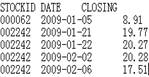
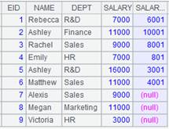
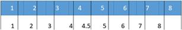
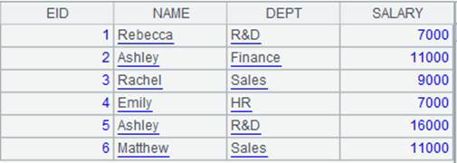

Description:
A foreign-key-style join beween an in-memory table and a table sequence or two in-memory tables.
T.join(C:., Ai:K,x:F,¡; ¡;¡)
Note:
The function finds eligible records from table sequence or in-memory table Ai by matching C,¡ field of in-memory table T with the latter¡¯s key, adds Ai¡¯s expression x to T as a field, and renames it F. Represent parameter K with # or just omit it. Use Ai¡¯s key when K is omitted, and use ordinals when it is represented by #.
Options:
|
@i |
Delete records of T that cannot match the foreign key, and by default, will record corresponding values as nulls. When parameters x:F are absent, just perform the fileting on Ai |
|
@o(F;¡) |
Use the original records of Ai as a new field F to generate new records; here x is equivalent to ~ |
|
@d |
Delete records of T that match the foreign key when parameters x:F are absent, which is equivalent to performing fileting on Ai |
|
@k |
When x is represented by ~, record the correspondence relationship between F and C,¡in the result set to identify the foreign key for a pre-join |
Parameters:
|
T |
An in-memory table |
|
C |
T¡¯s foreign key; use colon to separate multiple fields of a composite foreign key |
|
Ai |
A table sequence or an in-memory table |
|
K |
Ai¡¯s key |
|
x |
Expression of an Ai¡¯s field |
|
F |
Field name of expression x |
Return value:
A table sequence
Example:
|
|
A |
|
|
1 |
=connect("demo").cursor("select EID,NAME,DEPT,SALARY from EMPLOYEE where EID<10 order by EID" ) |
|
|
2 |
=A1.memory() |
Return an in-memory table  |
|
3 |
=connect("demo").query("select * from PERFORMANCE order by EMPLOYEEID").keys(EMPLOYEEID) |
Return a table sequence whose key is EMPLOYEEID
|
|
4 |
=A2.join(EID,A3, BONUS*2:ALL_SALARY) |
Perform a foreign-key-style join between an in-memory table and a table sequence, during which values that cannot match the foreign key are recorded as nulls  |
|
5 |
=A2.join@i(EID,A3, #3:ALL_SALARY) |
Use @i option to delete A2¡¯s records that cannot match the foreign key; #3 is the third field  |
|
6 |
=A2.join@i(EID,A3) |
Use @i option to delete A2¡¯s records that cannot match the foreign key; perform filtering only on A3¡¯s table sequence since parameters x:F are absent  |
|
7 |
=A2.join@d(EID,A3) |
Use @d option to delete A2¡¯s records that match the foreign key; perform filtering only on A3¡¯s table sequence since parameters x:F are absent
|
|
8 |
=A2.join@o(emp;EID,A3, BONUS*2:ALL_SALARY) |
Use @o option to make the orginal records of A2¡¯s in-memory table the new field emp and generate new records
|
|
9 |
=A2.join@k(EID,A3, ~:ALL_SALARY) |
With @k oiption, record the correspondence relationship between ALL_SALARY and EID in the result table sequence to identify the foreign key of a pre-join when parameter x is ~
|
|
10 |
=connect("demo").cursor("select * from PERFORMANCE order by EMPLOYEEID").memory().keys(EMPLOYEEID) |
Return an in-memory table using EMPLOYOEEID as the key
|
|
11 |
=A2.join(EID,A10, BONUS*2:ALL_SALARY) |
Perform a foreign-key-style join between A2¡¯s in-memory table and A10¡¯s
|